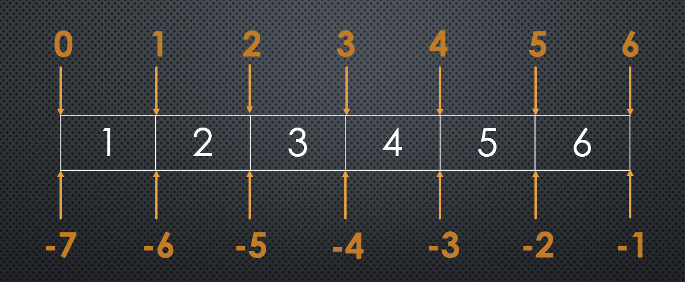

list, tuple, dict & set
immutable 不可變的
大多數資料型態為 immutable
a = 123 # integer
a = "abc" # string可以裝不同型態的資料
指派就是取出舊資料再放入新資料
試試以下程式碼：
a = 1 # line 1
print(id(a)) # line 2
a = 2 # line 3
print(id(a)) # line 4Line 2 和 Line 4會不同
再試試：
s = "123" # line 1
print(s[0]) # line 2
s[0] = 'a' # line 3會出現 TypeError
a = (1, 2, '3')b = ['4', 5, 6]
相加
(1, 2, 3) + (4, 5, 6)
[1, 2, 3] + [4, 5, 6]
倍增
(1, 2, 3) * 5
[4, 5, 6] * 7String 也適用
正數取值
a = (1, 2, '3')
a[2]
負數取值
b = ['4', 5, 6]
b[-1]String 也適用
[ start : end : step ]

a = [1, 2, 3, 4, 5, 6]
a[0:]
a[:5]
a[::-1]
a[0:5:3]切片後不會影響原來的序列
String 也適用喔～
input, output & format
The if statement